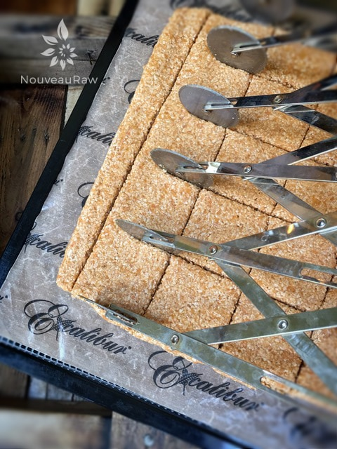
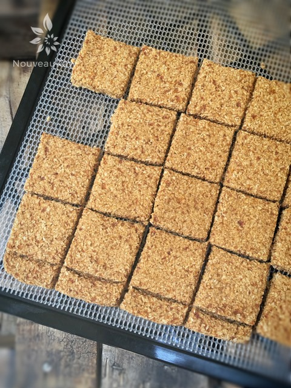

Apricot and Cinnamon Coconut Crackers

~ raw, vegan, gluten-free, nut-free ~
When you start omitting certain ingredients from your diet in the name of health, you might feel like you are sacrificing all of your favorite foods. This misconception isn’t the case anymore, as the many recipes, like this one, here on NouveauRaw demonstrate.
These crackers are nut-free, grain-free, seed-free, gluten-free, and don’t have any added sugars. While this recipe may be void many things, it certainly does not lack in flavor or nutrients.
With each bite you can be thankful that you are feeding your body; vitamin A (helps maintain healthy mucosa and skin), vitamin C (natural anti-oxidant), dietary fiber (aids digestive disorders), potassium (helps regulate heart rate), manganese (plays a role in energy metabolism), selenium (reduces recurrent infections)… and the list goes on. It doesn’t appear that we are “sacrificing” anything if you ask me.
Feel like chatting about Apricots?
Apricots come in a variety of colors, from pale yellow to dark oranges. They tend to be small in stature with a fuzzy exterior. Let’s not forget to mention that they are full of fragrance, taste terrific, and are the stuff of still-life paintings.
When you cut an apricot open, you will find a seed, or what you think is the seed. In all actuality, that “seed” is a shell protecting the seed within, which looks and tastes similar to an almond of all things and is even edible.
Apricot season lasts from May until September. Before we dig into how to select the best apricot, you should only buy the organic ones. Conventional apricots carry high pesticide residues. Look for apricots that are a uniform golden-orange color with a rich aroma. Avoid those with pale yellow color as they were picked too soon and are not as flavorful. They should be stored at room temperature until ripe, then popped in the refrigerator.
But the apricots and the coconut are not the only stars in this recipe. I added cinnamon for its incredible warming effect in the body, also because it has been shown to decrease the amount of glucose that enters the bloodstream after a meal (cracker). It does this by interfering with numerous digestive enzymes, which slows the breakdown of carbohydrates in the gastrointestinal tract. Even salt plays a significant part in this recipe. Culinary-wise, it helps to elevate the natural sweetness in the apricots. But salt also plays an active role in the body. Read more (here) where I share the health benefits of Himalayan pink salt.
So a lot is going on in this little cracker of ours. If you are craving something light, crunchy, and slightly sweet, then this recipe was designed for you. It goes together within minutes, and while it is dehydrating away, you can lay in the hammock and read your favorite book. Have a blessed and happy day, amie sue
Ingredients:
Yields 16 crackers
- 2 cups unsweetened, shredded dried coconut
- 1 Tbsp ground Ceylon cinnamon
- 1/4 tsp Himalayan pink salt
- 3 cups (452 g) fresh, diced apricot
- 1 Tbsp maple syrup (optional)
Preparation:
- In a food processor, fitted with the “S” blade, combine the shredded coconut, cinnamon, and salt. Make sure they are well mixed.
- If you don’t have shredded coconut but have large pieces of dried coconut… that’s ok too. Just make sure to process it until it reaches a small crumble size. This is the “flour” for the cracker base.
- Add the apricots and sweetener, processing until it becomes a spreadable batter.
- Sometimes apricots are juicier than others. If yours are dry, you might need to add some water, so it creates a paste-like texture. Do this 1 Tbsp at a time, so it doesn’t get too wet. I had to add 2 Tbsp to my batch this time.
- The sweetener is only needed if your apricots are not very sweet or if you have a sweet tooth.
- If you are trying to reduce your added sugars, try a squirt of liquid NuNaturals stevia.
- Also, you can add 1 Tbsp of lemon juice to bump up the flavor of the apricot if needed.
- Line the dehydrator tray with a non-stick teflex sheet.
- Spread the batter from edge to edge or until it reaches about 1/4″ thick. I wouldn’t want to go any thinner that way; you have a nice sturdy cracker.
- Make sure that you spread it evenly, so it dries evenly.
- Score the crackers into desired shapes and sizes. You can use a pizza cutter or a long metal ruler to create the score marks. I used my 6-wheel pastry cutter.
- Sprinkle coarse sea salt on top; this will add a layer of flavor as well as amp up the sweet flavors.
- Dehydrate at 145 degrees (F) for 1 hour, then reduce to 115 degrees (F) and continue drying for 10+ hours… until dry and crispy.
- Snap apart and let cool before storing, store in an airtight bag/container.
- They should last several weeks in the pantry or frozen for 1-2 months. If they start to soften due to humidity, throw them back in the dehydrator to crisp up.
Culinary Explanations:
- Why do I start the dehydrator at 145 degrees (F)? Click (here) to learn the reason behind this.
- When working with fresh ingredients, it is essential to taste test as you build a recipe. Learn why (here).
- Don’t own a dehydrator? Learn how to use your oven (here). I do, however honestly believe that it is a worthwhile investment. Click (here) to learn what I use.

Above the crackers are heading into the dehydrator, and below through the magic of bloggin’… they are coming out of the dehydrator. It appears “somebody” (Bob!!) had a snack attack in the midst of my photoshoot. hehe

© AmieSue.com